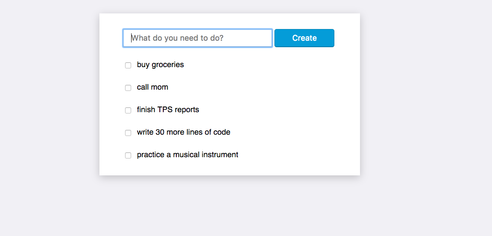

Class Agendas
-
Week 1
- Web Development: Full-stack vs. front-end vs. back-end
- Code Editors: Atom vs. Sublime
- HTML:
- View Source Code
- Basic Structure
- Tags
-
Week 2
- HTML syntax: tag elment structure (start tags and closing tags)
- New HTML tags:
h1h2headhrimg
- Atom shortcuts
-
Week 3
- CSS Review: Styling the border radius
- CSS New: (Inline vs. Style-tag)
- HTML Elements: p, ul, ol, li
-
Week 4
- HTML Review: anchor tags
- CSS New: Use a linked stylesheet
-
Week 5
- CSS Review: practice with selectors
- CSS Review: Use a linked stylesheet
-
Week 6
- CSS Review: practice with advanced selectors
- Advanced CSS (animation and a quick look at event handlers, plus other javaScript)
- Tic Tac Toe: Learning about HTML tables:
table tr td
-
Week 7
- HTML and CSS Review: advanced practice with anchors (using target), layout and positioning with margin and padding, how to center with
margin: 0 auto - More Fun with Forms: using inputs, labels, and a submit button
- HTML and CSS Review: advanced practice with anchors (using target), layout and positioning with margin and padding, how to center with
-
Week 8
- Forms Review: inputs with numbers, range, email; labels; required, disabled, checked
- Introduction to JavaScript: Data Types... string, number, boolean, variable, array
-
Week 9
- Final Forms Review: inputs with numbers, range, email; how to use
required; where to place the submit button. - JavaScript Functions: Understanding inputs, outputs (return), and using variables.
- Final Forms Review: inputs with numbers, range, email; how to use
-
Week 10
- More with JavaScript Functions: HW review... outputs (return), variables, and calling/executing functions.
- HTML + JavaScript: How to sync them up by using the DOM and event handlers.
-
Week 11
- HTML & CSS Review: Floats
- JavaScript: the
document - JavaScript: using
prompt()method. - HTML + JavaScript: How to sync them up by using the DOM.
-
Week 12
- CSS Review: Relative sizing with percents and ems
- JavaScript: more practice using the
documentin Chrome's javascript console. - HTML + JavaScript: How to sync them up by using the DOM, event handlers, and functions.
-
Week 13
- Introduction to Command Line Interface with Terminal (Mac) and Windows Prompt (PC)
- JavaScript Variables -- Scope: looking at global vs. local
- JavaScript Variables -- Reasignment: defining varialbes (again).
-
Week 14
- JavaScript Control Flow: If/Else Statements
- JavaScript Functions: More Practices/Review
-
Week 15
-
Week 16
-
Week 17
-
Week 18
-
Week 19
-
Week 20
-
Week 21
-
Week 22
-
Week 23
-
Week 24
-
Week 25
-
Week 26
-
Week 27
-
Week 28
-
Week 29
-
Week 30
-
Week 31
-
Week 32
-
Week 33
-
Week 34
-
Week 35
-
Week 36
-
Week 37
-
Week 38
-
Week 39
-
Week 40
-
Week 41
-
Week 42
-
Week 43
-
Week 44
-
Week 45
-
Week 46
-
Week 47
-
Week 48
-
Week 49
-
Week 50
Homework
-
Week 1:
- Sign-up for freecodecamp.com
- Complete the "Getting Started" challenges
- Complete the first 10 challenges of HTML5 and CSS (stop after completing "Use a CSS Class to Style an Element")
-
Week 2:
- freecodecamp.com: complete next 10 challenges (stop after "make circular images...")
- Within your
HTML_Basic.htmlfile, add style to the HTML: inline styles - Within your
HTML_Basic.htmlfile, add style to the HTML: within a style tag or a separate style sheet (css)
-
Week 3:
- freecodecamp.com: complete next 10 challenges (stop after "add a submit button to a form")
- Continue on your
HTML_Basic.htmlfile, add style to the HTML: inline styles to two more HTML (if you want add multiple style properties, like color and background-color)
-
Week 4:
- Use The CSS Diner (link here) to complete to Level 16
-
Week 5:
- Use The CSS Diner (link here) to complete the rest (through Level 32)
- Continue work on
tic_tac_toe.htmland build a gameboard as much as possible
-
Week 6:
- freecodecamp.com: complete next 10 challenges (you should be 40 lessons into the front-end developer certification; stop after "Adjust the Margin of an Element"). BONUS if you feel up for it: complete the last 17 more and finish the HTML and CSS section.
- Use The CSS Diner (link here) to complete every level (if you haven't already). Repeat every level once again, so that you are very comfortable with CSS Selectors.
- Continue work on
tic_tac_toe.htmlso that you have more content: Layout for Player 1 and Player 2, reset button, etc. Also have more CSS: Background colors/images, text styles (colors, centered, and more), etc.
-
Week 7:
- freecodecamp.com: compelete the last challenges of the HTML and CSS section; then complete first 10 lessons of the "Basic JavaScript" section
- Continue your forms assignment: include radio buttons, checkboxes, ranges, telephone number inputs, email inputs, website address inputs, and a number input into your form. Practice requiring certain inputs.
-
Week 8:
- Finish your forms assignment (if you haven't done some of these, then complete them now): include radio buttons, checkboxes, ranges, telephone number inputs, email inputs, website address inputs, and a number input into your form (with min and max). Practice requiring and disabling certain inputs.
- freecodecamp.com: complete first 22 lessons of the "Basic JavaScript" section; you should solve through the "Declare String Variables" challenge.
-
Week 9:
-
Week 10:
- Continue to add to your
tic_tac_toe.htmlandtic_tac_toe.cssfiles. Suggestions:- Make a place on the page that will display each of two players' names.
- Make a place on the page that will display which player's turn it is (as well as display who wins or if it is a tie game).
- Create css classes for each player's turn. That is, make two css classes with different styles to the
tdcells. Maybe make one class turn the td's blue background with white text.
- freecodecamp.com: complete first 42 lessons of the "Basic JavaScript" section; you should solve through the "Access Multi-Dimensional Arrays With Indexes" challenge.
- Continue to add to your
-
Week 11:
- Create a new file, call it
basic_calculator.html- Two number inputs
- Four math operations (as buttons)
- A result
divto display the answer
Build a calculator to look like this:
(Don't worry, just do the HTML and CSS setup, we'll do the JavaScript together to make the calculator work!)

- freecodecamp.com: complete first 55 lessons of the "Basic JavaScript" section; you should solve through the "Stand in Line" challenge.
- Create a new file, call it
-
Week 12:
- Continue with the file:
basic_calculator.html. Use the addition/sum example as a guide or template to make the calculator able to subtract, multiply, and divide too. - ****BONUS**** with
basic_calculator.html: Create (and make functional) a CLEAR button that resets all values as blank. The input values and the answer all would be reset. - freecodecamp.com: complete first 67 lessons of the "Basic JavaScript" section; you should solve through the "Comparisons with the Logical Or Operator" challenge.
- Continue with the file:
-
Week 13:
- Continue with the file:
tic_tac_toe.html. Build a function that will clear the textContent of the board. Hint #1: begin by clearing the textContent of just one of thetdelements. Repeat for the othertdelements one by one. There's a better way to repeat this action, but for now just write it many times with a differenttdelement each Week #2: textContent will equal "" (empty string). - ****BONUS #1**** with
tic_tac_toe.html: Create a function that will set atdelement's textContent to "X". - ****BONUS #2**** with
tic_tac_toe.html: Create a function that will set atdelement's textContent to "O". - freecodecamp.com: complete next 5 lessons of the "Basic JavaScript" section; you should solve through the "Golf Code" challenge.
- Continue with the file:
-
Week 14:
- freecodecamp.com: complete next 5 lessons of the "Basic JavaScript" section; you should solve through the "Returning Boolean Values from Functions" challenge. Then, with this knowledge, redo your isEven function without an if/else conditional.
- freecodecamp.com: in the "Video Challenges" watch and complete the questions for "The DOM"
-
Week 15:
- freecodecamp.com: complete next 10 lessons of the "Basic JavaScript" section; you should solve through the "Using Objects for Lookups" challenge.
- freecodecamp.com: in the "Video Challenges" watch and complete the questions for "JavaScript Lingo"
-
Week 16:
- Continue with the file:
tic_tac_toe.html. Style the cells by adding the correct CSS class to them (in theplayX()or theplayO()functions). Do this withelement.classList.add("NAME OF THE CLASS"). If you need help with this, use the MDN resource. - Continue with the file:
tic_tac_toe.html. Create a function that changes the Scoreboard text. Use a conditional if/else statement so that you change the text depending on the value of the variableturn. - freecodecamp.com: complete next 9 lessons of the "Basic JavaScript" section; you should solve through the "Nesting For Loops" challenge.
- freecodecamp.com: in the "Video Challenges" watch and complete the questions for "Chrome Developer Tools"
- Continue with the file:
-
Week 17:
- Continue with the file:
tic_tac_toe.html. Fix yourreset()function. You can do this with or without a for-loop. Though, bonus points if you do so WITH a for-loop or a forEach loop. - freecodecamp.com: complete the last 9 lessons of the "Basic JavaScript" section.
BONUS: If you want to do more freecodecamp lessons, begin with a few in the "Object Oriented and Functional Programming" section.
- Continue with the file:
-
Week 18:
- Finish the file:
tic_tac_toe.html. Create and implimit a function to check for a win. - Finish the file:
tic_tac_toe.html. Create and implimit a function to check for a stalemate (tie game). - freecodecamp.com: complete all the exercises of "Object Oriented and Functional Programming" section.
- freecodecamp.com: pick one of the exercises of "Basic Algorithm Scripting" to complete. Try to do it. We'll go over each one you all try.
- Finish the file:
-
Week 19:
- Finish the file:
tic_tac_toe.html. Finish the vertical and diagonal checks for a win. - Finish the file:
tic_tac_toe.html. Make sure yourgameStatus()function identifies the winner (use thechangeText()function) correctly. - Finish the file:
tic_tac_toe.html. Make sure yourgameStatus()function handles a stalemate. - freecodecamp.com: complete the first 10 exercises of "Responsive Design with Bootstrap" section. You should solve up to and including the "Ditch Custom CSS for Bootstrap" challenge.
- freecodecamp.com: pick another of the exercises of "Basic Algorithm Scripting" to complete. Try to do it. We'll go over each one you all try.
BONUS: Try to refactor/improve the code (using loops) to take out a lot of the repeated code.
- Finish the file:
-
Week 20:
- freecodecamp.com: complete the next 12 exercises of "Responsive Design with Bootstrap" section. You should solve up to and including the "Split your Bootstrap Row" challenge.
- freecodecamp.com: pick another of the exercises of "Basic Algorithm Scripting" to complete. Try to do it. We'll go over each one you all try.
-
Week 21:
- freecodecamp.com: complete the final 9 exercises of "Responsive Design with Bootstrap" section.
- freecodecamp.com: pick another of the exercises of "Basic Algorithm Scripting" to complete. Try to do it. We'll go over each one you all try.
-
Week 22:
- freecodecamp.com: complete the first 10 exercises of the "jQuery" section. You should complete through the exercise, "Change Text Inside an Element Using jQuery"
- freecodecamp.com: one more time, pick one of the exercises of "Basic Algorithm Scripting" to complete. Try to do it. Really, try to do it. Use the hint(s) that are on the side of the page. During the lesson, we'll complete one together as a group.
- Make sure you have a media query on your
swapi_info.htmlpage.
-
Week 23:
- freecodecamp.com: complete the rest of the exercises of the "jQuery" section.
- freecodecamp.com: complete the first 2 of the exercises of the "JSON APIs and Ajax" section. You should complete through the exercise, "Change Text with Click Events"
- freecodecamp.com: one more time, pick one of the exercises of "Basic Algorithm Scripting" to complete. Try to do it. Really, try to do it. Use the hint(s) that are on the side of the page. During the lesson, we'll complete one together as a group.
-
Week 24:
- In a new file, complete the Street Fighter + Hadoukens Exercise. Here's my work to help you:
- freecodecamp.com: complete the rest of the exercises of the "JSON APIs and Ajax" section.
- freecodecamp.com: one more time, pick one of the exercises of "Basic Algorithm Scripting" to complete. Try to do it. Really, try to do it. Use the hint(s) that are on the side of the page. During the lesson, we'll complete one together as a group.
-
Week 25:
- Finish the
Street Fighter + Hadoukens Exercise. Here's my work to help you:
If you haven't already, try to put in the sound (perhaps with a button to turn on/off the audio?).
- Video Challenges on freecodecamp.com: complete the rest of the video challenges we haven't done yet. Yes, all of them. You'll do Computer Basics, DOM, JS Lingo, Chrome Dev Tools, and Big O Notation.
- freecodecamp.com: one more time, pick one of the exercises of "Basic Algorithm Scripting" to complete. This time during the lesson, we'll complete one together as a group, so practice/try it beforehand.
- Finish the
Street Fighter + Hadoukens Exercise. Here's my work to help you:
-
Week 26:
- Easy:
- Additional setup of the Star Wars API exercise...
- Rename the
movies_db.htmlfile to "swapi_info.html" - If you have an external css file linked, also rename that too. Be careful, you'll need to fix the path in the link.
- If you have an external js file linked, also rename that too. Be careful, you'll need to fix the path in the link.
- Change the text input to a select with three options. Bonus points goes to anyone that can add a disabled instruction option (it might say, "Select a planet")! See the example here:
- Rename the
- Medium:
- Hacking 101...
- Read at least the first chapter of this book.
- Hard:
- Easy:
-
Week 27:
- Easy:
- More practice with the Star Wars API exercise...
- No need to submit a form anymore, just let the planet data (the names), appear as the page loads:
- The GET request won't happen from
$("form").submit(...), instead, it will happen right away. - You'll need to loop through the data response (I suggest using a
forEachloop), to create an HTML element (I suggest adiv) for each planet. - What will you do with each planet during the loop? Set the text. Give it a class for styling purposes. Attach an event handler (this time use a "click" event) to set the text of "main" with the info of the planet.
- The GET request won't happen from
- Put some cool styling in there! Practice your CSS skills! Impress me!
I trust you won't just copy my code, but if you get really really stuck, then use parts of my code to help you:
- No need to submit a form anymore, just let the planet data (the names), appear as the page loads:
- Medium:
- Even more practice with the Star Wars API exercise...
- Notice how the API only provides 10 planets in the data response?!
- Create a function to add a button that calls and pulls in more planets.
- Implement this
addButtonfunction in a way that makes sense:- When does the button get created? Where will the button be placed?
- What new API request will you need to make? (Hint: it is still a GET request, but the url is different.) How will the url be different?
- When will you make that API request?
- Extra bonus points: Do you want the button to be there if you've pulled in all the planets? No, so how do you make the button go away when you want it to go away?
- Hacking 101...
- Read at least the first 5 chapters of this book.
- Email me what you think or an analysis of what you read. Your email to me doesn't need to be long or formal, just tell me if you like the book and what it's about.
- Hard:
- Easy:
-
Week 28:
- Easy:
- More practice with the Star Wars API exercise...
- Try to include more data from the API. Maybe use the planet population data? Which movie(s) the planet was in? Your choice, just use more of the API response.
- Again, put some cool styling in there! Practice your CSS skills! Impress me!
Like last time, I'll trust you won't just copy my code, but if you need to see it, here is my code to help you:
- Medium:
- Even more practice with the Star Wars API exercise...
- Place a button on each planet div that will remove that planet.
- Make each of these buttons work. Where will you add code for this?
- You might need to change the conditional statement for when the "Add more planets" button renders, no?
- Hacking 101...
- Read at least the first 7 chapters of this book.
- Email me what you think or an analysis of what you read. Your email to me doesn't need to be long or formal, just tell me if you like the book and what it's about.
- Hard:
- Easy:
-
Week 29:
- Easy:
-
Finish the
- Once more, I'll trust you won't just copy my code, but if you need to see it, here is my code to help you:
swapiassignments if you still need to do so. We'll do a show-and-tell to review code next time, so be ready.
- Continue the exercise:
- Refactor the code to avoid repeating yourself. Could you use the 'this' keyword?
- Swap out your js file that uses plain javascript. Your new javascript file should do the same thing (color-picker changes the body's background color), but it is written in jQuery.
- Compare and contrast the two files. Is the jQuery file fewer lines of code? Easier to read/write/load/etc?
- Medium:
Duplicate your
colorsfiles as started code for a new set of files (html file, js file of plain javascript, js file of jQuery). Call these new files .- More practice with plain javascript in your
- Create a button that will add a
diveach time you click on it. - Each
divshould be shaped as a circle. - Each
divshould be any size you want and any border you want. - Each
divshould have a background color that is the same color selected in the color-picker. - For now, just put each new
divanywhere on the page.
dotsexercise...
- Even more practice with jQuery in your
- Create a button that will add a
diveach time you click on it. - Each
divshould be shaped as a circle. - Each
divshould be any size you want and any border you want. - Each
divshould have a background color that is the same color selected in the color-picker. - For now, just put each new
divanywhere on the page.
dotsexercise...
- Hacking 101...
- Read at least the first 10 chapters of this book.
- Email me what you think or an analysis of what you read. Your email to me doesn't need to be long or formal, just tell me if you like the book and what it's about.
- Create a button that will add a
- Hard:
- Easy:
-
Week 30:
- Easy:
-
Finish the
dotsassignments if you still need to do so. We'll do more show-and-tell to review code next time, so be ready. - Compare and contrast the two js files (plain js vs. jQuery) for all the work you do. Is the jQuery file fewer lines of code? Easier to read/write/load/etc?
-
Finish the
- Medium:
Let's have some fun with time-based actions using
setInterval!Duplicate your
dotsfiles as started code for a new set of files (html file, js file of plain javascript, js file of jQuery). Call these new files .- With plain javascript in your
- Create a button that will continually add dots when you click on it.
- Create a slider (range input) that determines how fast the dots are added.
- Create another button that will stop creating the dots when you click on it.
timed_dotsexercise...hint#1: use
setIntervalhint#2: use value of the slider (see next item to create) as the delay time.
You might want to style it! Hint: Look at MDN tips.
hint: clearInterval
- With jQuery in your
- Do the same thing you did with plain js, but this time with jQuery.
timed_dotsexercise... - Hard:
- Advanced work with your
- Change your buttons to have the same button that starts creating dots become the button to stop/terminate (and vice-versa depending on the state)
timed_dotsassignment...
- Hacking 101...
- Read at least the first 12 chapters of this book.
- Email me what you think or an analysis of what you read. Your email to me doesn't need to be long or formal, just tell me if you like the book and what it's about.
- Easy:
-
Week 31:
- Easy:
Finish the assignment using jQuery:
-
Again, let's have some fun with time-based actions using
setInterval!If you needed the updated starter code jQuery file, you can see it in "Sources" dev tools. Also, I'll include it here:
Within the code block for the click event on line 3 of the jQuery js, you'll need to create a variable for the
setInterval.For setInterval's parameters, use the
createDotfunction as the function, and use the value of the slider as the time delay. -
Create another button that will stop the dots when you click on it.
hint: clearInterval
-
Again, let's have some fun with time-based actions using
- Medium:
- More work with your
-
Change your buttons: have only one button that starts creating dots and then is the (same) button to stop/terminate the dots (and vice-versa depending on the state).
Don't forget to update the button text to change from "Start dots" to "Stop dots"!
-
Add another input: Create another slider to determine the value of the size of the dot.
You can determine the max and min of the range.
timed_dotsassignment, pick one to do... -
Change your buttons: have only one button that starts creating dots and then is the (same) button to stop/terminate the dots (and vice-versa depending on the state).
- Hard:
Do the other (both total) of the Medium section above.
- Easy:
-
Week 32:
- Easy:
Keep working on assignment using jQuery:
- Create an input checkbox, which if selected, will deactivate the color picker actions and instead automatically set the color of the dots as they appear. That is, a user clicks the checkbox and clicks the "Start dots" button, then dots appear one at a time of a changed color, first maybe blue, then maybe purple, then maybe red, etc.
- Medium:
- More work with your
- Make the slider for setting the speed capable of changing how fast the dots are created without needing to click stop and then click start again as a way of resetting.
timed_dotsassignment...
- Easy:
-
Week 33:
- Easy:
-
Currently, there is an event listener for a
mousemoveon themainelment. Add another event listener on themainelement, but this time a click. The function for that click should then create a dot in that location. - Keep in mind that if you want the center of the dot to have the correct coordinates, then you need to postion the dot by including the dot radius.
- Let's keep all our dots uniform and make the dots 50px by 50px
- The dot color should be the selected color from the color-picker.
-
Currently, there is an event listener for a
- Medium:
More work with your
paint_dotsassignment...- If you did the Easy assignment above with plain javascript, then duplicate the file and try jQuery.
- If you did the Easy assignment above with jQuery, then duplicate the file and try plain javascript.
- Include a checkbox to toggle an "Erase mode" so that, if checked, the user can click to erase dots instead of create dots. Include this functionality (hint: you can start with a conditional statement).
- Easy:
-
Week 34:
- Easy:
Keep working on the growing dots assignment:
- To begin, don't worry about the "eraser functionality", just create growing dots when you mousedown (and stop when you mouseup).
- Also, don't worry about changing the colors automatically, just use the color value from the colorPicker input.
- Medium:
More work with your
paint_grow_dotsassignment...- Include a checkbox to toggle an "Erase mode" so that, if checked, the user can click to erase dots instead of create dots. Include this functionality (hint: you can start with a conditional statement).
- Change your function that creates dots to erase the previous dot that might be beneath it (if you are stacking them as you create larger dots). In this way, you'll only have one dot created after the complete mousedown then mouseup sequence (instead of a stack of dots from the sequence).
- Easy:
-
Week 35:
- Easy:
Finish the growing dots assignment:
- Use my code as a guide if you get stuck.
- Try to include the eraser functionality.
- Medium:
Begin a new assignment:
todo_list.html- Try to create the
HTMLandCSSto match this:

- Get as far as you can with the javascript to make it functional. At the very least, if you create an item, then it will append to the bottom of the list.
- Try to create the
- Hard:
Add more features to your
todo_list.html...- an item counter to show how many tasks you have
- a way to add multiple items at once
- Easy:
-
Week 36:
-
Week 37:
- Finish the Todo List assignment with jQuery:
- If you need to do so, look at the source code to help you.
- Write the javascript code using jQuery!
- Website Project:
- Decide on what you want to code.
- With pen/pencil on paper, draw out how you want it to look.
- Make a list of features/elements that the page needs.
- Finish the Todo List assignment with jQuery:
-
Week 38:
- Finish the Todo List assignment with jQuery:
- Include additional features:
- Don't let it create an empty/blank todo task.
- Be able to create multiple todos from one submission (when items are listed and separated by a commma).
- Update the counters at the bottom of the section.
- Website Project:
- Code the HTML of the site.
- Begin the CSS and/or JS of the site.
-
Also, make a list of features/elements that the page needs...
- Photo carousel?
- Map with location markers?
- Contact form?
- Registry?
- Finish the Todo List assignment with jQuery:
-
Week 39:
- Website Project:
- Divide the code into sections and finish the navbar with links to those sections.
- Put placeholder content into each section, thereby you give the page structure.
- Start more of the CSS.
-
Week 40:
- Website Project:
- Contine more of the CSS. Use flexbox for display.
- Build the RSVP form.
- Try building the photos section.
-
Week 41:
- Website Project:
- Compare jump vs. smooth scroll approaches.
- Build the RSVP form.
- Try building the photos section.
- Internship Application:
- Plan the video and application
-
Week 42:
- Website Project:
- Design and build the layout of the sections.
- Internship Application:
- Finish the video and application.
-
Week 43:
- Website Project:
- To improve the RSVP form, inspect code from other forms on the internet. Primarily, use the Xfinity form as a guide.
-
Week 44:
- Forms Exercise:
- Include UI and UX to match this work: Form Exercise
-
Week 45:
- Workflow practice:
- Make 2 PRs (pull requests) on the website project (the wedding repo)
- Make 1 issue on the website project (the wedding repo)
- Make 2 PRs (pull requests) on the forms-exercise (the forms-exercise repo)
- Make 1 issue on the forms-exercise (the forms-exercise repo)
-
Week 46:
- More Workflow practice:
- Make 1 PR (pull request) on the website project (the wedding repo)
- Make 1 issue on the website project (the wedding repo)
- Make 1 PR (pull request) on the forms-exercise (the forms-exercise repo)
- Make 1 issue on the forms-exercise (the forms-exercise repo)
- Finish Internship Application
- Make final draft of video
- Submit Application!
-
Week 47:
- Even More Workflow practice:
- Make 1 PR (pull request) on the website project (the wedding repo)
- Make 1 PR (pull request) on the forms-exercise (the forms-exercise repo)
These PRs should be an additional feature or significant change to the code (like adding a "success alert" when the form is submitted).
- Chrome Extention(s)
- Brainstorm ideas for extentions
- Sketch design and/or list features
-
Week 48:
- Chrome Extention(s)
- Continue to brainstorm ideas for extentions
- Sketch design and/or list features
- Review Assignment: Tribute Page
-
Complete this FreeCodeCamp Project
No javaScript is required. You can use Bootstrap to avoid writing your own CSS, but you are welcome to have your own custom CSS. You can write the code as a CodePen or just as HTML/CSS in Atom.
-
Week 49:
- Another Review Assignment: Portfolio Page
-
Complete this FreeCodeCamp Portfolio Project
No javaScript is required, yet. You can use Bootstrap for CSS if you want. Again, you can write the code as a CodePen or just as HTML/CSS in Atom.
- Chrome Extentions
-
Finish the JavaScript Tips Tab Tutorial
OPTIONAL: Swap out other content instead of js tips, like facts about hockey.
- Continue to brainstorm ideas for new extentions
- Sketch design and/or list features for new extentsions
-
Complete this FreeCodeCamp Portfolio Project
-
Week 50:
- Complete a Portfolio Page
-
Finish the last two User Story checkbox-items from the FreeCodeCamp Portfolio Project
Include multiple (at least 2) thumbnail images. Finish the navbar.
- Chrome Extention - JS Tips
-
Complete the JavaScript Tips Tab Tutorial
OPTIONAL: Swap out other content instead of js tips, like facts about hockey.
-
Finish the last two User Story checkbox-items from the FreeCodeCamp Portfolio Project
Topics
-
Week 1:
- Build a "Hello World" webpage
-
Week 2:
- Build a "HTML Basics" webpage and practice HTML elements
-
Week 3:
- Continue to build a "HTML Basics" webpage and practice new HTML elements with styling
-
Week 4:
- Build a
forms.htmlwebpage and prep for input form elements
- Build a
-
Week 5:
- video link is here
- Build a
tic_tac_toe.htmlwebpage with a styled header. You'll also build the gameboard for the game (next time).
-
Week 6:
- video link is here for part one
- video link is here for part two
- video link is here for part three
- Code Along: Jee Jee's Art and Disc Spinners (see here)
- Continue building
tic_tac_toe.htmlwebpage with HTML table elements.
-
Week 7:
- Continue to build a
forms.htmlwebpage and enhance the input form elements
- Continue to build a
-
Week 8:
- Continue to build a
forms.htmlwebpage and enhance the input form elements - Use Chrome's JavaScript Console Developer Tool to practice and test the use of data types
- Continue to build a
-
Week 9:
- Use Chrome's JavaScript Console Developer Tool to practice and test the use of functions
-
Week 10:
- Use Chrome's JavaScript Console Developer Tool to practice and test the calculator functions
- Use
tic_tac_toe.htmlfile to discuss the document object and the DOM. Then practice using HTML and JS together with an event handler.
-
Week 11:
- Use Chrome's JavaScript Console Developer Tool to practice with
document - Use
tic_tac_toe.htmlfile to prompt for the players' names. Also, display those names on the DOM.
- Use Chrome's JavaScript Console Developer Tool to practice with
-
Week 12:
- Continue to use Chrome's JavaScript Console Developer Tool to practice with
documentand the elements usingdocument.querySelector() - Use
basic_calculator.htmlfile get the addition button to work. You'll need the values of the inputs, you'll need a function to add them, and within the function you'll need to set/assign the sum as the textContent to the Answer div.
- Continue to use Chrome's JavaScript Console Developer Tool to practice with
-
Week 13:
- Get a very brief introduction to the command line. Write your first command and see the output.
- Use
basic_calculator.htmlfile and refactor it to use global variables (and local variables in your functions), then get the reset/clear button to work. You'll need a new function for reset/clear.
-
Week 14:
- Use
tic_tac_toe.htmlfile and add a conditional statement for control flow, as well as global variables.
- Use
-
Week 15:
- Use
tic_tac_toe.htmlfile and add a div into the html and an event listener to the javascript.
- Use
-
Week 16:
- Use
tic_tac_toe.htmlfile and add an event listener with event bubbling (event propagation). Use control flow to assign "X" or "O".
- Use
-
Week 17:
- add styling (CSS property: transform).
- Use functions and control flow to display on the scoreboard a welcome/start/intro message as well as a message during gameplay to indicate who's turn it is to make a move.
Refactor the
tic_tac_toe.htmlfile to: -
Week 18:
- Iteration/Looping: Cover how and when to use loops with proper syntax.
- use the reset to clear all td's (without looping).
- use the reset to clear all td's (WITH looping).
Refactor the
tic_tac_toe.htmlfile to: -
Week 19:
- Executing a function from another function (using callback functions).
- check for a winner via a completed row
- check for a winner via a completed column or diagonal
Refactor the
tic_tac_toe.htmlfile to: -
Week 20:
- Finish the
tic_tac_toe.htmlfile and refactor the stalemate to use a for-loop.
The final Tic Tac Toe should look/perform like this.
- Finish the
-
Week 21:
- Introduce CSS Media Query
-
Week 22:
-
Week 23:
- Intro to jQuery:
- Syntax
- Effects: hide, show, fade, slide
- Using jQuery via CDN or relative path to local file
- Intro to jQuery:
-
Week 24:
- Discussion/overview of Git
- Discussion/overview of Data and Computer Memory
- Chrome Dev Tools: Looking at the hover state
- jQuery Review
- Prep and discussion about the Street Fighter Exercise
-
Week 25:
- Discussion of
CSS:hover pseudo class styling vs.jQueryhover handling - Review and debug the Street Fighter Exercise
- Discussion of
-
Week 26:
- Star Wars Api Calls
-
Week 27:
- Star Wars Api Requests (Refactoring to include user input)
- Star Wars Api Responses
-
Week 28:
- CSS Review: rgba() and how to use opacity to blur a background image
- Star Wars Api Responses: loop through the JSON
-
Week 29:
- Star Wars Api Review: setting up the request and understanding/using the response
- Build the starter code for the
colorsexercise that will: - review js and jQuery
- compare and contrast js vs. jQuery
- review CSS
-
Week 30:
- Compare and contrast js vs. jQuery
- Compare
.fetch()vs.$.get() - Examples of
Math.random()to generate random numbers
-
Week 31:
- More ways to compare and contrast js vs. jQuery
- Debugging and Code Review
-
Week 32:
- Debugging and Code Review
- javascript tracing to see when a method executes
- setInterval vs. setTimeout
-
Week 33:
- HW Code Review: setInterval
- pseudo code w/dots: changing the dot speed
- CSS: flexbox
-
Week 34:
- HW Code Review: click event properties clientX and clientY
- pseudo code w/dots: using setInterval to change dot size
-
Week 35:
- HW Code Review: using setInterval to change dot width and height, or use transform scale
- Explore Github, Github Pages, Deploy!
-
Week 36:
- Setup Git
- Setup Github Desktop
-
Week 37:
- Advanced Setup: Github Desktop
- Freelancing Discussion + Brainstorming
-
Week 38:
- Preparing the IDE for Github, jQuery, etc.
- Project Planning
-
Week 39:
- Debugging Code
- Project Management
-
Week 40:
- Flexbox
-
Week 41:
- Navbar approaches
-
Week 42:
- Web Design: Page Layout and SPA (single page application)
-
Week 43:
- Intro to UI/UX in forms
-
Week 44:
- Code Collaboration Techniques and Tools
- Net Neutrality
-
Week 45:
- Git and Github workflow
- More UI (and UX) for forms practice
-
Week 46:
- More Git and Github workflow
- Cross-Browser Support and Resources
-
Week 47:
- JavaScript Object Review
-
Week 48:
- Project Ideation
- Review: using the
.split()method.
-
Week 49:
- Hackathons: Pros and Cons
- Chrome Extension Code Intro
-
Week 50:
- HTML Review: Anchor Tags
- Chrome Extension Code Review